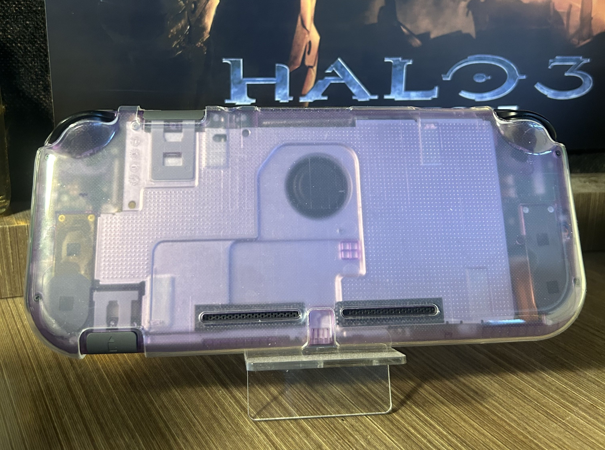
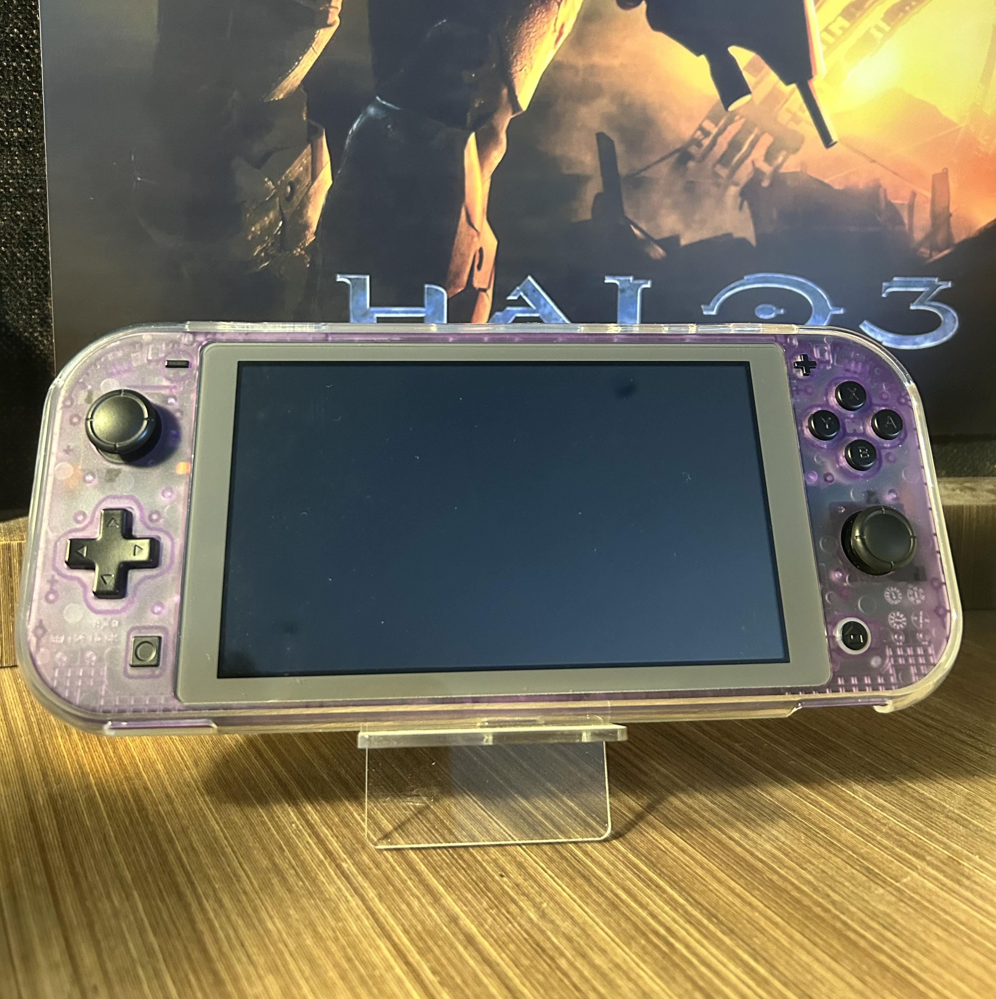
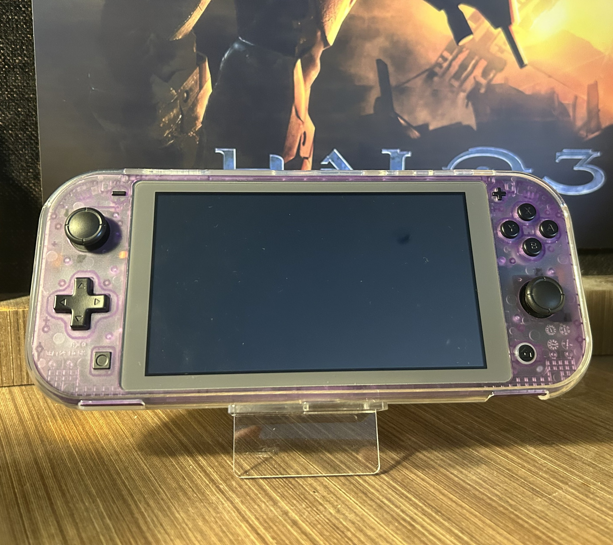
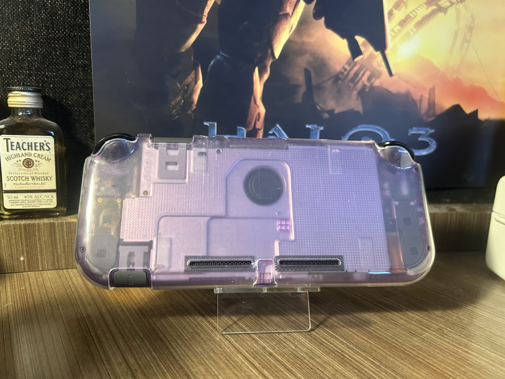
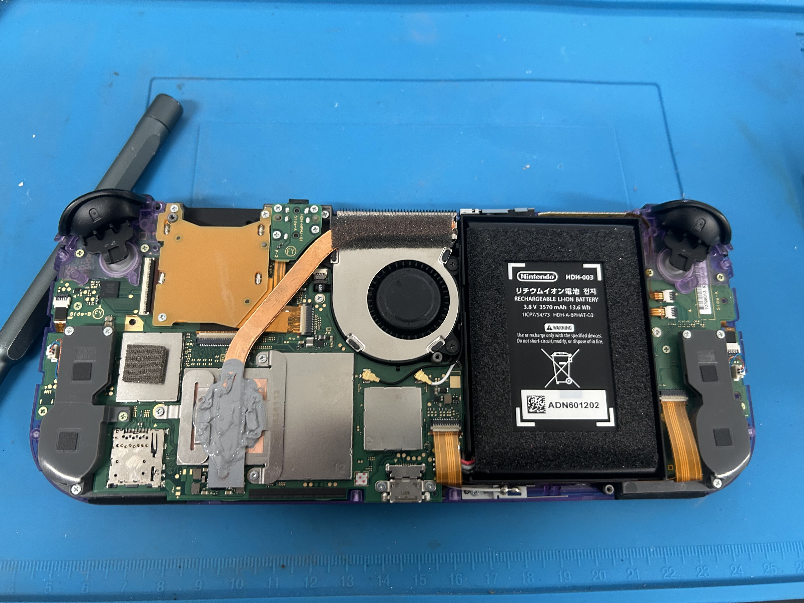
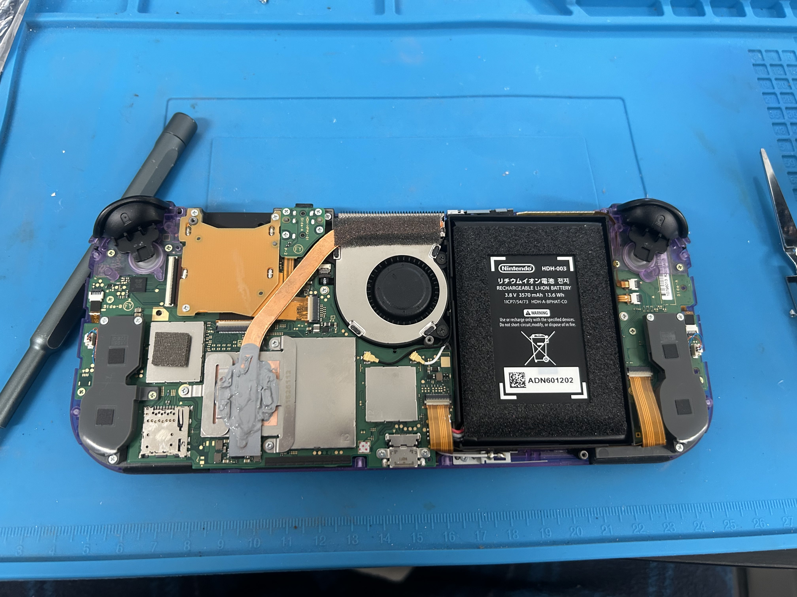
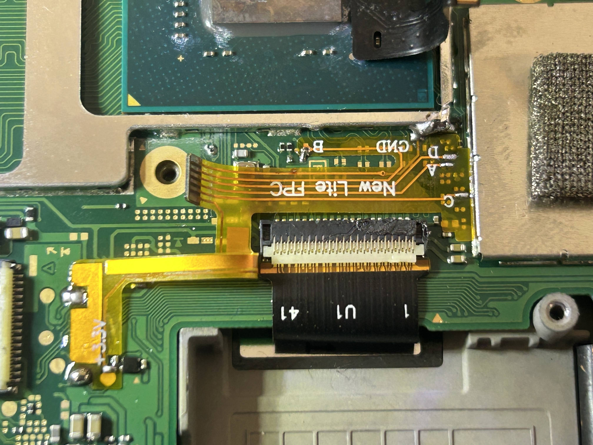
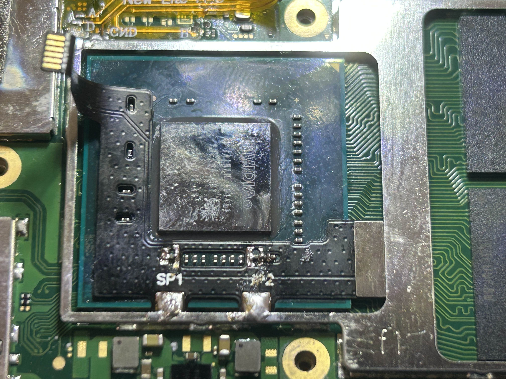

The Switch Lite is my favourite current handheld. The small form factor reminds me of the PSP and PS Vita; Pocketable, purpose-built for handheld, no pretending to be a TV console. The stock grey and white colour scheme though? Gross and boring (in my professional opinion). And Nintendo's joysticks? I'm sure we've all heard how reliable they are.
This build started as a shell swap and ended up being the most comprehensive mod I've done to a modern handheld. A new shell, drift-proof sticks, a thermal repaste, and a Picofly modchip. Each one justified on its own, but better together.
Why This Build?
Two main reasons drove the modchip install specifically:
1. Improving my micro-soldering. The Picofly has small pads, tiny components, and requires precision. At the time, the Dreamcast resistor arrays were behind me and this was perfect practice.
2. Unlocking the hardware. I bought the whole silicon, I want to use the whole silicon. Overclocking, forcing docked-mode rendering for better textures and resolution, backing up physical cartridges, and running homebrew apps were all on the list.
Shell Swap - Atomic Purple
The eXtremeRate Clear Atomic Purple kit includes a full replacement shell, buttons, and all the small trim pieces. The inspiration was the Atomic Purple Game Boy Color, one of the best colourways Nintendo ever produced, and it translates beautifully to the Switch Lite form factor.
- Clear Atomic Purple shell with black buttons: inspired by the GBC Atomic Purple
- Full kit replacement: shell, buttons, triggers, and all internal trim pieces
- Quality matches stock: same material feel, same tolerances
- The modchip is essentially invisible from the outside through the clear shell


GuliKit Hall Effect Joysticks
Nintendo's joystick design uses physical wipers that wear down over time, leading to the infamous Joy-Con drift. Hall effect sticks use contactless magnets to read position instead, and they cannot drift mechanically.
- Drop-in replacement for stock Switch Lite joysticks
- Contactless magnetic position sensin. No wiper contact, no drift
- Premium feel, tighter response, minimal deadzone compared to stock
- Preventative maintenance: getting to Switch Lite sticks for replacement later is painful


Thermal Repaste
While inside, I cleaned and replaced the thermal paste. Arctic MX4 was applied across both the SoC and the heat pipe, deliberately heavy on the heat pipe to couple the back metal plate and act as an extended heatsink surface.
- Arctic MX4 on the SoC and heat pipe
- Back metal plate now acts as an extended heatsink via the heat pipe coupling
- Fan runs quieter under load, better heat transfer means less aggressive fan response
Picofly Modchip Install
The Switch Lite uses a Mariko V2 board, which differs from the standard V2 Switch in that it has differently shaped metal shields and a smaller overall footprint. I bought a Lite-specific Picofly board designed to fit without extra wiring. One small catch is that the corner of the SoC's metal shield needed trimming to make it fit.


- Kapton tape over the SoC resistors to prevent accidental bridges with the heatsink
- All solder points checked visually under the microscope
- Continuity and resistance verified with a multimeter (diode values from the NX-modchip guide)
- SoC shield corner trimmed to fit, with minimal material removed


Testing and Results
After all checks, I reconnected the battery and powered on. The console booted instantly, a clean first boot is always a good sign.
- Booted successfully on first attempt ✓
- All joystick inputs registering correctly with zero deadzone
- Fan noticeably quieter under load
- Modchip essentially invisible from outside through the clear shell
Living With the Build
Three months on, this is confidently one of my best projects. The hall sticks are snappy and precise. The clear shell looks exactly how I wanted. The modchip is invisible and stable. Some homebrew highlights:
- Moonlight : game streaming from my PC, works flawlessly over local network
- RetroArch : retro emulation, the Switch hardware handles most systems up to PS1/N64 well
- PPSSPP / Flycast : dedicated PSP and Dreamcast emulators
- ReverseNX : forces docked-mode rendering in handheld, noticeably better image quality
- sys-clk : CPU, GPU, and memory clock overclocking utility
- Tinfoil : game save and update management
Wrapping Up
This build is a culmination of the skills I'd built up: shell swaps, micro-soldering, thermal work, and the patience to check everything twice before powering on. It's the most personal of the three builds I've documented, because it's a console I use every day.
The OLED screen mod is still sold out everywhere. When it becomes available, this build isn't finished yet.
Shoutouts
- GBAtemp forums : extensive documentation and community support
- NX-modchip installation guide : diode values and installation reference